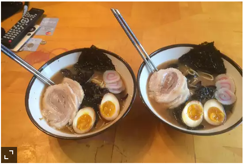

Description
Miso Ramen is one of three types of tare (seasoning) used to flavor ramen both in Japan—the other two are shio (salt) and shoyu (soy sauce). Miso is a popular dish and is very traditional. I came accross this recipe because of a famous chef called Ichiraku. He owns the most legendary ramen store. The recipe consists of soy sauce, brown suger, butchers twine, eggs and Naruto. Do you get it;)
Ingredients
- ¼ cup dried black fungus
- 2 cups mirin
- 1¼ cups soy sauce, divided
- ½ cup brown sugar
- 6 green onion bulbs, chopped, divided
- ½ onion, coarsely chopped
- 6 cloves garlic, peeled
- 2 pounds skin-on, boneless pork belly
- butcher's twine
- 4 eggs
- 2 tablespoons brown sugar
- ½ cup miso paste
- 4 (3 ounce) packages ramen noodles, or to taste
- 4 sheets nori (dry seaweed), quartered
- 1 naruto (fish paste stick with a red spiral pattern). sliced
Steps
- Preheat the oven to 275 degrees F (135 degrees C).
- Place black fungus in a large bowl and fill with water.
- Combine mirin, 1/2 cup soy sauce, 1/2 cup brown sugar, 3 green onion bulbs, chopped onion, and garlic in an oven-safe pot over high heat. Bring to a boil.
- Place pork belly skin-side down on a flat work surface. Roll up lengthwise and wrap with butcher's twine. Place pork belly in the pot with the mirin mixture and partially cover with a lid.
- Bake in the preheated oven until pork is tender and an instant-read thermometer inserted into the center reads at least 145 degrees F (63 degrees C), about 4 hours.
- Bring a separate pot of water to a boil over high heat. Gently place eggs in the pot and cook until yolks are barely set, 8 to 10 minutes. Transfer eggs to a bowl filled with ice water. Let sit, about 1 minute. Remove from water and peel eggs.
- Place eggs in a container with 1 cup water, 1/2 cup soy sauce, and 2 tablespoons brown sugar. Dampen a paper towel in the mixture and use it to cover the container. Refrigerate 4 hours to overnight.
- Drain the fungus and add to the liquid in the pot with the pork belly. Cover with a lid and refrigerate, 4 hours to overnight.
- Skim fungus from the top of the pork belly mixture and place in a pot with 8 cups water; fungus should be covered in pork belly fat. Add 1/4 cup soy sauce and miso paste. Bring to a boil.
- Remove skin from the pork belly using a knife. Chop the meat into pieces of desired thickness. Cut eggs in half lengthwise.
- Bring a separate pot of water to a boil. Cook ramen in boiling water, stirring occasionally, until noodles are tender, yet firm to the bite, about 3 minutes. Drain.
- Place 4 slices of nori diagonally in the corner of each bowl. Place noodles on top; arrange 2 egg halves and a few pork belly slices in separate corners. Cover with black fungus, top with green onions, and pour in broth. Top each bowl with a few slices of naruto. Let sit, about 3 minutes, before serving.